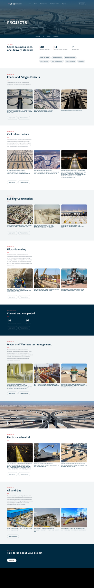
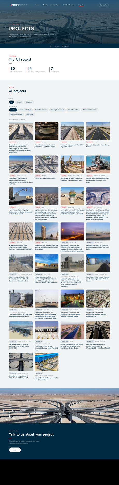
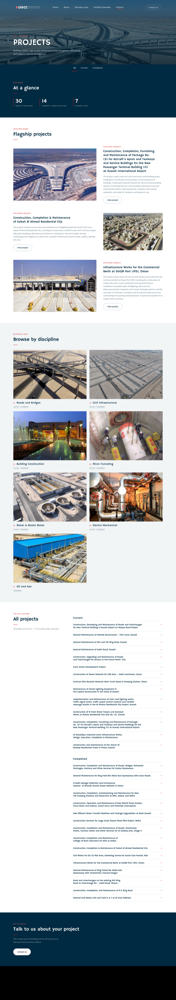

Scroll inside each preview column (they're full-page captures), then click "Open full mockup" to browse the real page.
Seven discipline sections with the approved intro paragraphs and 3 featured cards each. Stats + jump-pills up top, per-discipline "view current / completed" buttons.

All 30 projects in one gallery with status and discipline filter chips (works without JS). Strongest browsing UX and lazy-loading showcase.

Three large featured-project rows, a 7-tile discipline directory, then a fast-scan text ledger of all 30 contracts.

Mockups live in the isolated worktree branch projects-redesign; nothing on the real pages has changed.